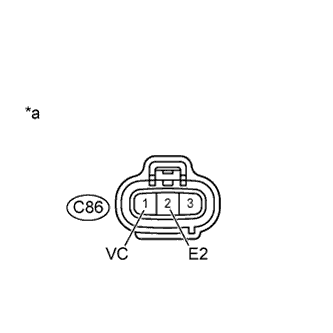

DTC P0405 Низкий уровень сигнала в цепи "А" датчика рециркуляции отработавших газов |
DTC P0406 Высокий уровень сигнала в цепи "А" датчика рециркуляции отработавших газов |
| Режим поездки при обнаружении DTC | Условие обнаружения DTC | Неисправный участок |
| Зажигание включено (IG) в течение 5 с | Выходное напряжение датчика положения клапана РОГ составляет менее 0,1 В в течение более 5 с (логика диагностирования за 1 поездку). |
|
| Режим поездки при обнаружении DTC | Условие обнаружения DTC | Неисправный участок |
| Зажигание включено (IG) в течение 5 с | Выходное напряжение датчика положения клапана РОГ составляет более 4,9 В в течение более 5 с (логика диагностирования за 1 поездку). |
|
| 1.ПРОВЕРЬТЕ НАПРЯЖЕНИЕ НА КОНТАКТЕ (РАЗЪЕМ ДАТЧИКА ПОЛОЖЕНИЯ КЛАПАНА РОГ) |
|  |
Отсоедините разъем датчика положения клапана РОГ.
Измерьте напряжение в соответствии со значениями, приведенными в таблице.
| Контакты для подключения диагностического прибора | Положение переключателя | Заданные условия |
| C86-1 (VC) - C86-2 (E2) | Выключатель зажигания в состоянии ON (ВКЛ) (IG) | 4,5 - 5,5 В |
| *a | Вид спереди разъема со стороны жгута проводов: (к датчику положения клапана РОГ) |
Подсоедините разъем электронного клапана управления разрежением в сборе.
|
| ||||
| OK | |
| 2.ПРОВЕРЬТЕ ДАТЧИК ПОЛОЖЕНИЯ КЛАПАНА РОГ |
Проверьте датчик положения клапана РОГ (Нажмите здесь).
|
| ||||
| OK | |
| 3.ПРОВЕРЬТЕ ЖГУТ ПРОВОДОВ И РАЗЪЕМ (ДАТЧИК ПОЛОЖЕНИЯ КЛАПАНА РОГ - ECM) |
Отсоедините разъем датчика положения клапана РОГ.
Отсоедините разъемы ECM.
Измерьте сопротивление разъемов со стороны жгута проводов.
| Контакты для подключения диагностического прибора | Состояние | Заданные условия |
| 86-1 (VC) - C91-13 (VCEG) | Всегда | Менее 1 Ом |
| C86-3 (EGLS) - C91-4 (EGLS) | Всегда | Менее 1 Ом |
| C86-2 (E2) - C91-14 (EEGL) | Всегда | Менее 1 Ом |
| Контакты для подключения диагностического прибора | Состояние | Заданные условия |
| 86-1 (VC) или C91-13 (VCEG)) - масса | Всегда | 10 кОм или более |
| C86-3 (EGLS) or C91-4 (EGLS) - Body ground | Всегда | 10 кОм или более |
Подсоедините разъем электронного клапана управления разрежением в сборе.
Подсоедините разъем ECM.
|
| ||||
| OK | |
| 4.ЗАМЕНИТЕ ECM |
Замените ECM (Нажмите здесь).
|
| ||||
| 5.ЗАМЕНИТЕ ЭЛЕКТРИЧЕСКИЙ КЛАПАН УПРАВЛЕНИЯ РОГ В СБОРЕ |
Замените электрический клапан управления РОГ в сборе (Нажмите здесь).
|
| ||||
| 6.ОТРЕМОНТИРУЙТЕ ИЛИ ЗАМЕНИТЕ ЖГУТ ПРОВОДОВ ИЛИ РАЗЪЕМ |
Отремонтируйте или замените жгут проводов или разъем.
| ДАЛЕЕ | |
| 7.ПРОВЕРЬТЕ, УСТРАНЕНА ЛИ ДОЛЖНЫМ ОБРАЗОМ НЕИСПРАВНОСТЬ |
Подсоедините портативный диагностический прибор к DLC3.
Удалите коды DTC (Нажмите здесь).
Включите зажигание (IG) и подождите не менее 5 с.
Войдите в следующие меню: Powertrain / Engine and ECT / DTC.
Убедитесь, что DTC не выводится снова.
| ДАЛЕЕ | ||
| ||